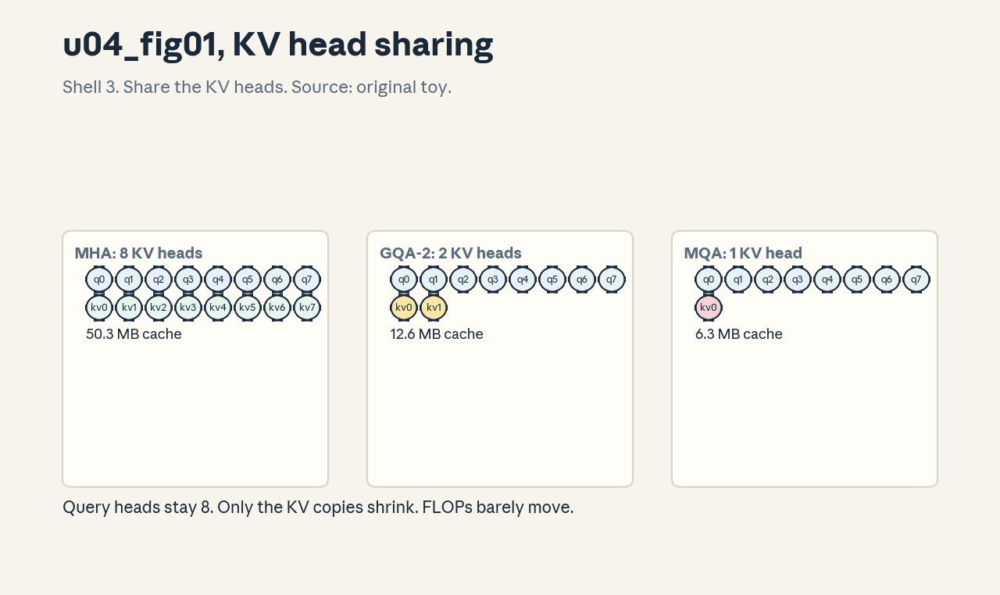
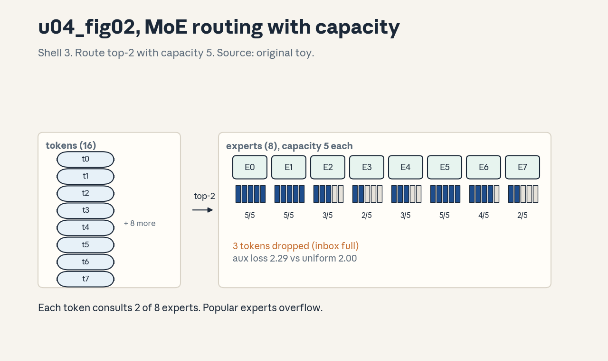
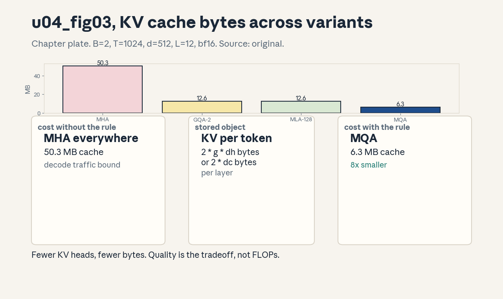

U04 · Attention alternatives and expert architectures
U04 , Attention alternatives and expert architectures
Prerequisites: P04, P14, P15. Bridge links in ../prerequisites.md.
Session: S04 (reported: Apr 8, Attention Alternatives, MoE).
Claim class: REQUESTED-BRANCH. All leaves PLANNED / SOURCE ATTRIBUTION
PENDING. Notation: see ../notation_and_shapes.md.
Local remediation , why attention is expensive
Read this if the U02/U03 assessments were not solid. Standard attention
costs O(T^2 * d) FLOPs and O(T^2) memory for scores, plus a KV cache of
2 * kv_heads * dh bytes per token per layer. Two pain points follow:
compute at long T, and cache bytes at long T. Every mechanism in this
unit attacks one or both. The baseline numbers: at B=2, T=1024, d=512,
h=8, L=12, bf16, the MHA KV cache is 50.3 MB and one layer’s full
attention is 2.15 GFLOP (from assets/compute_u04.py, executed
2026-10-06).
Worked check: halving kv_heads halves the cache, the score FLOPs do
not move (queries still number h). Assessment: predict the MQA cache
from the MHA number before reading C02. Key: ../keys/u04_answers.md
R1.
C01: Local and sparse attention
Leaf id cs336-U04-C01. Claim class REQUESTED-BRANCH.
Status PLANNED / SOURCE ATTRIBUTION PENDING.
-
Source mapping, scope, objectives, dependencies. S04. Scope: restricting which keys each query sees. Objectives: derive the windowed FLOP count, state what local attention cannot do. Depends on U03-C03, U03-C04.
-
Motivating question and toy. Question: must every query read all 1024 keys? Toy: window w=128 gives 0.27 GFLOP per layer versus 2.15 full: an 8.0x cut (from
compute_u04.py). -
Mental model. Local attention is a sliding window: query at t sees keys in [t-w, t]. Most linguistic dependencies are local, so the window keeps most of the signal at a fraction of the cost. Dilated or strided patterns extend the reach without dense cost.
-
Objects, symbols, units, shapes, assumptions. w: window size. Cost 2BhTwdh versus 2BhTTdh. Assumption: the task’s needed context fits mostly inside w.
-
Derivation / mechanism. Each query scores w keys instead of T. The mask is banded plus causal. Dilated: keys at t, t-d, t-2d, … Strided: a few global tokens see everything.
-
Computed example. From
assets/compute_u04.py(executed 2026-10-06): w=128 at T=1024 cuts attention FLOPs 8.0x (2.15 to 0.27 GFLOP). The ratio equals T/w exactly. -
Algorithm and reference implementation.
local_mask(T, w): banded causal mask. Six lines, the lab checks the band shape. -
Correctness checks and expected output. Row t has exactly min(t+1, w) allowed keys, rows sum to 1 after softmax, w=T recovers full attention. Expected outputs in the lab key.
-
Costs. FLOPs and score memory both scale with T*w. The KV cache is unchanged (keys are still stored for the window).
-
Nearest alternative and selection boundary. Full attention for short T or when long-range matters, linear attention (C04) when the T^2 must go entirely. Local wins when w covers the effective context.
-
Failure case and counterexample. A passkey-retrieval task with the key 5000 tokens back and w=128: the model can never see the answer. The assumption “dependencies are local” breaks on retrieval-style tasks, the failure is silent (fluent wrong answers).
-
Research reading and falsifiable extension. Reading: Longformer and BigBird papers (primary: pattern designs). Extension: measure task accuracy versus w on a synthetic retrieval task, hypothesis: a sharp threshold at the retrieval distance.
-
Assessment. (a) Recall: the windowed cost formula. (b) Oral ladder: define the window, compute the 8x by hand, justify the banded mask, implement local_mask, compare with full, debug a window that leaks the future, critique the locality assumption, design the retrieval experiment. (c) Transfer: w=128, T=100k. What still breaks, and what is the next lever? Answers:
../keys/u04_answers.mdA1. -
Lab and exercises. Lab U04 task 1 builds the mask and the FLOP comparison. See
../labs/u04_lab.md. -
Visuals. Audit row: the banded mask sketch. No figure, the mask pattern is tabular.
C02: MHA, MQA, GQA
Leaf id cs336-U04-C02. Claim class REQUESTED-BRANCH.
Status PLANNED / SOURCE ATTRIBUTION PENDING.
-
Source mapping, scope, objectives, dependencies. S04. Scope: sharing KV heads across query heads. Objectives: derive the cache formula, compare the three on cache bytes and quality. Depends on U03-C05.
-
Motivating question and toy. Question: do 8 heads need 8 separate KV copies? Toy from
compute_u04.py(B=2, T=1024, d=512, L=12, bf16): MHA (8 KV heads) 50.3 MB, GQA-2 12.6 MB, MQA (1 KV head) 6.3 MB. Queries stay 8 in all three. -
Mental model. KV heads are shared read-only memory, query heads are the readers. MHA: every reader has a private copy. MQA: one copy for all readers. GQA: groups of readers share. Quality degrades gracefully as sharing rises, cache shrinks proportionally.
-
Objects, symbols, units, shapes, assumptions. kv_heads g: MHA g=h, MQA g=1, GQA g in between. Cache per token per layer: 2gdh bytes. Assumption: dh fixed, only g moves.
-
Derivation / mechanism. K,V projections output (B,T,g*dh) instead of (B,T,d), each query head reads KV head h mod g (or a group mapping). Scores stay (B,h,T,T): the FLOP count barely moves, the bytes collapse.
-
Computed example. From
assets/compute_u04.py(executed 2026-10-06): 50.3, 12.6, 6.3 MB for g = 8, 2, 1: exactly proportional to g. -
Algorithm and reference implementation.
gqa_scores(Q, K, V, groups): repeat KV heads to h via repeat_interleave, then standard attention. About 8 lines. -
Correctness checks and expected output. GQA with g=h equals MHA exactly, MQA output shapes match MHA, cache formula verified against the byte counts. Expected outputs in the lab key.
-
Costs. Cache divides by h/g. Quality: MQA can lose a little on some tasks, GQA-8 is the common sweet spot.
-
Nearest alternative and selection boundary. MLA (C03) for more compression with learned latents. GQA is the default for new models, MQA when decode memory dominates everything.
-
Failure case and counterexample. Converting an MHA checkpoint to MQA by averaging KV heads: the averaged heads are not what training would learn, and quality drops more than a trained MQA. The assumption “heads are interchangeable” breaks, uptraining is the honest path.
-
Research reading and falsifiable extension. Reading: the GQA paper (Ainslie et al., 2023, primary) and the MQA paper (Shazeer, 2019, primary). Extension: compare MHA/GQA/MQA loss at fixed training FLOPs on the toy, hypothesis: gaps shrink with scale.
-
Assessment. (a) Recall: the cache formula and the three g values. (b) Oral ladder: define a KV head, compute the MQA cache by hand, justify why FLOPs barely move, implement the repeat, compare the three, debug the averaged-heads conversion, critique the fixed-dh assumption, design the fixed-FLOP comparison. (c) Transfer: decode batch grows 16x. Which variant’s advantage grows, and why? Answers:
../keys/u04_answers.mdA2. -
Lab and exercises. Lab U04 task 2 implements GQA attention and the cache table. See
../labs/u04_lab.md. -
Visuals. Figure u04_fig01: lesson plate, KV head sharing across MHA/MQA/GQA. Source: original toy. Shell 3. Render:
assets/render_u04.py.

C03: MLA mechanism and cache tradeoff
Leaf id cs336-U04-C03. Claim class REQUESTED-BRANCH.
Status PLANNED / SOURCE ATTRIBUTION PENDING.
-
Source mapping, scope, objectives, dependencies. S04. Scope: multi-head latent attention. Objectives: derive the latent cache, state the compute tradeoff. Depends on C02, P04.
-
Motivating question and toy. Question: can the cache shrink below one KV head? Toy: MLA with latent dim 128 gives 12.6 MB on the same config (from
compute_u04.py): like GQA-2, but the latent is learned, not a head subset. -
Mental model. MLA compresses K and V into a low-rank latent vector per token (down-projection), then up-projects per head at use time. The cache stores the latent, not the heads. Rank is the knob: smaller latent, smaller cache, more compression loss.
-
Objects, symbols, units, shapes, assumptions. Latent dim dc (here 128 < d=512). Cache per token per layer: 2*dc bytes (plus a small decoupled RoPE key in full designs). Assumption: the down/up projections are learned jointly.
-
Derivation / mechanism. c = x W_down (d -> dc), cached. Per head: k_h = c W_up_k, v_h = c W_up_v. The up-projections run per query during decode: extra FLOPs traded for fewer bytes. The absorption trick can fold the up-projection into the query side.
-
Computed example. From
assets/compute_u04.py(executed 2026-10-06): dc=128 gives 12.6 MB, matching GQA-2’s bytes with a learned compression instead of head sharing. -
Algorithm and reference implementation.
mla_cache(x)andmla_heads(c): down then per-head up, with shape asserts. About 10 lines. -
Correctness checks and expected output. With dc=d and identity projections, MLA equals MHA (reconstruction check). Cache bytes match the formula. Expected outputs in the lab key.
-
Costs. Cache shrinks by d/dc, decode adds the up-projection FLOPs per token. Net win when memory-bound (decode usually is).
-
Nearest alternative and selection boundary. GQA when simplicity matters, MLA when the cache must go lower than MQA allows. MLA’s complexity pays off at long context.
-
Failure case and counterexample. dc set too small: the latent cannot carry the key distinctions heads need, and attention blurs. The assumption “low rank suffices” breaks past the task’s rank, the symptom is flat attention weights.
-
Research reading and falsifiable extension. Reading: the DeepSeek-V2/V3 reports (primary: architecture sections). Extension: sweep dc on the toy and measure reconstruction error versus cache bytes, hypothesis: a knee in the curve.
-
Assessment. (a) Recall: the latent cache formula. (b) Oral ladder: define the latent, compute the 12.6 MB by hand, justify the extra FLOPs, implement down/up, compare with GQA, debug the tiny-dc blur, critique the learned-jointly assumption, design the dc sweep. (c) Transfer: prefill is compute-bound, decode is memory-bound. Where does MLA help, and where does it hurt? Answers:
../keys/u04_answers.mdA3. -
Lab and exercises. Lab U04 task 3 implements MLA and the reconstruction check. See
../labs/u04_lab.md. -
Visuals. Audit row: the cache-bytes table (MHA/GQA/MQA/MLA). The chapter figure (u04_fig03) plots it.
C04: Linear attention
Leaf id cs336-U04-C04. Claim class REQUESTED-BRANCH.
Status PLANNED / SOURCE ATTRIBUTION PENDING.
-
Source mapping, scope, objectives, dependencies. S04. Scope: attention in O(T) via kernel feature maps. Objectives: derive the recurrent form, prove equivalence with the quadratic form. Depends on U03-C03, P06.
-
Motivating question and toy. Question: can attention be a recurrence? Toy from
compute_u04.py: with phi(x) = relu(x)+eps, the recurrent form matches the quadratic form to 2.22e-16. -
Mental model. Replace softmax with a feature map: softmax(QK^T)V becomes phi(Q)(phi(K)^T V) / normalizer. The bracketed term is a fixed-size state updated per token: attention becomes an RNN with a matrix-valued hidden state.
-
Objects, symbols, units, shapes, assumptions. State S: (dh,dh), normalizer z: (dh,). Cost O(T*dh^2). Assumption: the feature map keeps the kernel positive and the approximation faithful.
-
Derivation / mechanism. out_t = phi(q_t)^T S_t / phi(q_t)^T z_t with S_t = S_{t-1} + phi(k_t) v_t^T. This equals the causal no-softmax attention by associativity of matrix multiplication.
-
Computed example. From
assets/compute_u04.py(executed 2026-10-06): max deviation 2.22e-16 between forms on random (6,4) inputs: exact, not approximate, for the same kernel. -
Algorithm and reference implementation.
linear_attn(q, k, v, phi): the recurrence, about 12 lines. -
Correctness checks and expected output. Equivalence with the quadratic form, state size independent of T, causal by construction. Expected outputs in the lab key.
-
Costs. O(T*dh^2) time, O(dh^2) memory: linear in T. The catch is expressivity: the kernel is weaker than softmax.
-
Nearest alternative and selection boundary. Softmax attention for quality, linear when T makes T^2 impossible and the task tolerates the kernel. Gated variants (C06) close some of the gap.
-
Failure case and counterexample. phi = identity with negative inputs: the “probabilities” go negative and the normalizer can hit zero. The assumption “phi keeps things positive” is load-bearing, elu+1 or relu+eps are the standard guards.
-
Research reading and falsifiable extension. Reading: the linear transformer paper (Katharopoulos et al., 2020, primary). Extension: compare task quality of linear versus softmax on the toy at several T, hypothesis: the gap is task-dependent.
-
Assessment. (a) Recall: the recurrent update. (b) Oral ladder: define the state, hand-run two steps, justify associativity, implement the recurrence, compare with softmax, debug the negative-phi blowup, critique the kernel assumption, design the quality comparison. (c) Transfer: T=1M, dh=128. What are the state bytes, and what breaks in the quadratic form? Answers:
../keys/u04_answers.mdA4. -
Lab and exercises. Lab U04 task 4 implements the recurrence and the equivalence check. See
../labs/u04_lab.md. -
Visuals. Audit row: the state-update diagram. No figure, the recurrence is tabular.
C05: Recurrent and state-space alternatives
Leaf id cs336-U04-C05. Claim class REQUESTED-BRANCH.
Status PLANNED / SOURCE ATTRIBUTION PENDING.
-
Source mapping, scope, objectives, dependencies. S04. Scope: sequence models without pairwise attention. Objectives: state the SSM recurrence, compare its scaling with attention. Depends on C04, P04.
-
Motivating question and toy. Question: what if the state were a vector, not a matrix? Toy: a linear SSM keeps h_t = A h_{t-1} + B x_t with h in R^N: O(T*N) time, O(N) memory, no T^2 anywhere.
-
Mental model. State-space models compress history into a fixed vector through a learned linear dynamical system. Selectivity (Mamba) makes A, B input-dependent so the state can forget. Attention remembers everything, SSMs remember a summary.
-
Objects, symbols, units, shapes, assumptions. State dim N, matrices A (N,N, often diagonal), B (N,1), C (1,N). Assumption: the dynamics are stable (eigenvalues inside the unit disk).
-
Derivation / mechanism. Unrolling gives a convolution with the kernel K = (CB, CAB, CA^2B, …): training parallelizes via FFT or scan, inference is a recurrence. Selectivity breaks the convolution view but keeps the scan.
-
Computed example. Hand-verified recurrence on a scalar SSM (A=0.9, B=1, C=1, x=[1,0,1]): h = [1, 0.9, 1.81], y = h. The lab checks the unrolled-versus-recurrent match.
-
Algorithm and reference implementation.
ssm_scan(x, A, B, C): the recurrence, about 8 lines. -
Correctness checks and expected output. Recurrence equals unrolled convolution for the linear case, stable A keeps bounded states on long runs. Expected outputs in the lab key.
-
Costs. O(T*N) time, O(N) state: the cheapest long-context option. The price is recall precision on long-range lookups.
-
Nearest alternative and selection boundary. Linear attention (matrix state, more expressive), full attention (exact recall). SSMs win on very long sequences with compressible history.
-
Failure case and counterexample. Fixed (non-selective) SSM on a passkey task: the state averages the key away and recall fails. The assumption “a summary suffices” breaks on exact-recall tasks, selectivity or attention is the fix.
-
Research reading and falsifiable extension. Reading: the Mamba papers (Gu and Dao, 2023/2024, primary). Extension: compare SSM versus attention on synthetic recall at increasing distances, hypothesis: a distance threshold where attention wins.
-
Assessment. (a) Recall: the recurrence and its cost. (b) Oral ladder: define the state, hand-unroll three steps, justify the convolution view, implement the scan, compare with linear attention, debug the unstable A, critique the summary assumption, design the recall experiment. (c) Transfer: the task is mostly local with rare long jumps. What hybrid do you propose? Answers:
../keys/u04_answers.mdA5. -
Lab and exercises. Lab U04 task 5 implements the SSM scan and the equivalence check. See
../labs/u04_lab.md. -
Visuals. Audit row: the scaling comparison table (attention/linear/SSM). No figure, tabular claim.
C06: Gated delta mechanisms
Leaf id cs336-U04-C06. Claim class REQUESTED-BRANCH.
Status PLANNED / SOURCE ATTRIBUTION PENDING.
-
Source mapping, scope, objectives, dependencies. S04. Scope: strengthening linear recurrences with gating and delta updates. Objectives: write the gated update, explain what problem it solves. Depends on C04, C05.
-
Motivating question and toy. Question: linear attention forgets nothing and overwrites blindly, how do we get selective memory? Toy: S_t = alpha_t * S_{t-1} + beta_t * phi(k_t) v_t^T with learned gates: the state can now decay old content and admit new content.
-
Mental model. Gates are learned valves on the state: alpha controls forgetting, beta controls writing. The delta rule goes further: remove the old value of the key before writing the new one, like editing a memory slot.
-
Objects, symbols, units, shapes, assumptions. alpha_t, beta_t: scalars in (0,1) per step. Assumption: gates are functions of the input (selective), not constants.
-
Derivation / mechanism. Gated: S_t = diag(alpha_t) S_{t-1} + beta_t outer(phi(k_t), v_t). Delta: S_t = S_{t-1} (I - beta_t phi(k_t) phi(k_t)^T) + beta_t outer(phi(k_t), v_t): the projection removes what the key already stored.
-
Computed example. Lab check: with alpha=1, beta=1 the gated form reduces to plain linear attention (matches C04 to 1e-12), with alpha=0 the state holds only the current token.
-
Algorithm and reference implementation.
gated_linear_attn: the recurrence with gate inputs, about 14 lines. -
Correctness checks and expected output. Reduction to C04 at alpha=beta=1, causality (state at t independent of future), bounded state on long runs. Expected outputs in the lab key.
-
Costs. Same O(T*dh^2) as linear attention plus the gate projections. The win is quality, not speed.
-
Nearest alternative and selection boundary. Plain linear attention (simpler, weaker memory), SSMs (vector state). Gated variants are the current quality frontier for subquadratic attention.
-
Failure case and counterexample. Constant gates (not input-dependent): the model cannot do content-based forgetting and behaves like a leaky average. The assumption “gates are selective” is the whole point, constants waste the mechanism.
-
Research reading and falsifiable extension. Reading: Gated DeltaNet and related papers (primary: paper derivations). Extension: ablate the delta term on the toy, hypothesis: the delta helps most on tasks with repeated keys.
-
Assessment. (a) Recall: the gated and delta updates. (b) Oral ladder: define the valves, hand-run one gated step, justify the delta projection, implement, compare with plain linear, debug constant gates, critique the selectivity assumption, design the ablation. (c) Transfer: the workload has bursty repeated keys. Which mechanism do you pick, and why? Answers:
../keys/u04_answers.mdA6. -
Lab and exercises. Lab U04 task 6 implements the gated recurrence and the reduction check. See
../labs/u04_lab.md. -
Visuals. Audit row: the update-equation table. No figure, tabular claim.
C07: Dense versus MoE FFNs
Leaf id cs336-U04-C07. Claim class REQUESTED-BRANCH.
Status PLANNED / SOURCE ATTRIBUTION PENDING.
-
Source mapping, scope, objectives, dependencies. S04. Scope: replacing one FFN with many experts. Objectives: state the MoE parameter math, explain why FLOPs per token barely move. Depends on U03-C09.
-
Motivating question and toy. Question: how do models reach 100B+ parameters without 100B of compute per token? Toy from
compute_u04.py: 8 experts of 3.15M params = 25.17M total, but only k=2 are active per token: 6.29M active, a 4.0x ratio. -
Mental model. MoE is conditional compute: the model owns many FFNs (experts) but consults only k per token. Parameters scale with E, compute scales with k. The router decides who sees what.
-
Objects, symbols, units, shapes, assumptions. E experts, top-k routing. Expert: one SwiGLU FFN (3ddff params). Assumption: k << E.
-
Derivation / mechanism. Total params = E * expert_params. Active per token = k * expert_params. Ratio E/k. The router adds d*E params, negligible. Communication appears in distributed settings (U09-C06).
-
Computed example. From
assets/compute_u04.py(executed 2026-10-06): dense 3.15M, MoE total 25.17M, active 6.29M, ratio 4.0 = E/k = 8/2. -
Algorithm and reference implementation.
moe_layer(x, experts, router, k): route, dispatch, combine. About 15 lines, the lab uses a slow but clear loop version. -
Correctness checks and expected output. With E=1, k=1 the MoE equals the dense FFN. Active param count matches k*expert_params. Expected outputs in the lab key.
-
Costs. Parameters xE/k versus dense, per-token FLOPs ~k times dense-FFN, memory for all experts, all-to-all in expert parallelism.
-
Nearest alternative and selection boundary. Dense scaling (simpler, more FLOPs per quality point), wider dense FFN. MoE wins when parameters are cheap and FLOPs are dear.
-
Failure case and counterexample. E=64, k=1 with no load balancing: 3 experts get all tokens, 61 starve, and the model is effectively a 3-expert model with 64 experts’ memory. The assumption “capacity is used” breaks without balancing (C11).
-
Research reading and falsifiable extension. Reading: the Switch Transformer paper (Fedus et al., 2022, primary) and the Mixtral report. Extension: measure expert utilization versus E on the toy, hypothesis: utilization falls without the aux loss.
-
Assessment. (a) Recall: total versus active parameters. (b) Oral ladder: define an expert, compute the 4.0x by hand, justify conditional compute, implement the layer, compare with dense, debug the starved experts, critique the k<<E assumption, design the utilization experiment. (c) Transfer: inference is memory-bound and all experts must sit in HBM. What changes in the E/k choice? Answers:
../keys/u04_answers.mdA7. -
Lab and exercises. Lab U04 task 7 implements the MoE layer and the parameter counts. See
../labs/u04_lab.md. -
Visuals. Audit row: the dense/MoE parameter table. The routing figure (u04_fig02) shows dispatch.
C08: Router scores
Leaf id cs336-U04-C08. Claim class REQUESTED-BRANCH.
Status PLANNED / SOURCE ATTRIBUTION PENDING.
-
Source mapping, scope, objectives, dependencies. S04. Scope: how the router scores experts. Objectives: derive softmax and sigmoid routers, state the normalization choice. Depends on C07, P06.
-
Motivating question and toy. Question: who decides which experts fire? Toy: scores = softmax(xW), W (d,E). Token t picks the top-k scores, the output is the score-weighted sum of expert outputs.
-
Mental model. The router is a tiny classifier over experts. Its scores are both the selection signal and the mixing weights. Softmax forces competition (weights sum to 1), sigmoid lets experts fire independently.
-
Objects, symbols, units, shapes, assumptions. W_r: (d,E). Scores: (T,E). Assumption: the router trains jointly with the experts via the task loss plus balancing terms.
-
Derivation / mechanism. Softmax router: p = softmax(xW_r), output = sum_{e in topk} p_e * expert_e(x). Sigmoid router: p = sigmoid(xW_r) with separate normalization. Top-k selection is non-differentiable, gradients flow through the selected experts’ weights.
-
Computed example. From
assets/compute_u04.py(executed 2026-10-06): on 16 random tokens with E=8, top-2 selection gives loads [5,5,3,2,3,5,4,2]: visibly imbalanced without any balancing loss. -
Algorithm and reference implementation.
route(x, W, k): scores, top-k indices and weights. About 8 lines. -
Correctness checks and expected output. Weights of selected experts are positive, k indices per token, softmax rows sum to 1. Expected outputs in the lab key.
-
Costs. dE parameters and BT*E scoring FLOPs: tiny next to experts.
-
Nearest alternative and selection boundary. Learned routers versus hash routing (fixed assignment, no learning). Learned wins on quality, hash wins on simplicity and perfect balance.
-
Failure case and counterexample. Router collapse: the router sends everything to one expert early, that expert learns fastest, and the rich get richer. The assumption “joint training balances” breaks, C11 exists because of this.
-
Research reading and falsifiable extension. Reading: router design studies (primary: paper ablations). Extension: track the entropy of router scores during toy training, hypothesis: entropy falls without intervention.
-
Assessment. (a) Recall: the routing formula. (b) Oral ladder: define the scores, hand-route 4 tokens to 3 experts, justify softmax versus sigmoid, implement route, compare with hash routing, debug the collapse, critique the joint-training assumption, design the entropy experiment. (c) Transfer: k=1. What changes in the gradient path, and what is the standard fix? Answers:
../keys/u04_answers.mdA8. -
Lab and exercises. Lab U04 task 8 implements the router and the load histogram. See
../labs/u04_lab.md. -
Visuals. Figure u04_fig02: lesson plate, token to top-k expert dispatch with capacity. Source: original toy. Shell 3. Render:
assets/render_u04.py.

C09: Top-k experts
Leaf id cs336-U04-C09. Claim class REQUESTED-BRANCH.
Status PLANNED / SOURCE ATTRIBUTION PENDING.
-
Source mapping, scope, objectives, dependencies. S04. Scope: the top-k selection and combination. Objectives: implement top-k dispatch, state the k=1 versus k=2 tradeoff. Depends on C08.
-
Motivating question and toy. Question: why k=2 and not 1 or 8? Toy: k=2 of 8 gives the 4.0x param/compute ratio with a weighted blend, k=1 halves active compute but makes routing discontinuities sharper.
-
Mental model. k sets the blend: k=1 is hard selection (one expert owns the token), k=2 blends two opinions. Larger k smooths training and costs compute linearly.
-
Objects, symbols, units, shapes, assumptions. k: experts per token. Output: sum of k expert outputs weighted by router scores. Assumption: k <= E, usually k in {1, 2}.
-
Derivation / mechanism. y = sum_{e in topk(t)} w_{t,e} * expert_e(x_t). With k=E the MoE is a dense weighted ensemble (defeats the purpose). Gradients reach only the selected experts.
-
Computed example. From
assets/compute_u04.py(executed 2026-10-06): k=2 active params 6.29M, k=1 would be 3.15M (same as dense) with 8x total params. -
Algorithm and reference implementation.
topk_combine(x, experts, idx, w): gather, run, weight, sum. About 10 lines. -
Correctness checks and expected output. k=E equals the full weighted sum, k=1 picks the argmax expert, weights renormalize after selection in the standard variant. Expected outputs in the lab key.
-
Costs. Active compute scales with k, router scoring is unaffected. k=2 is the common default.
-
Nearest alternative and selection boundary. Soft routing (all experts, weighted): smoother but no compute saving. Top-k is the standard because it saves the compute.
-
Failure case and counterexample. Renormalizing top-k weights versus not: the two conventions give different effective learning rates per expert and different load statistics. The assumption “weights are weights” breaks across implementations, match the convention to the checkpoint.
-
Research reading and falsifiable extension. Reading: top-k routing analyses (primary: paper ablations). Extension: compare k=1 versus k=2 loss on the toy at matched active compute, hypothesis: k=2 wins slightly.
-
Assessment. (a) Recall: the combination formula. (b) Oral ladder: define top-k, hand-combine 2 experts, justify k=2, implement, compare with soft routing, debug the renormalization mismatch, critique the k<=E assumption, design the k comparison. (c) Transfer: a token’s top-2 scores are 0.51 and 0.49. What risk does hard top-1 carry here? Answers:
../keys/u04_answers.mdA9. -
Lab and exercises. Lab U04 task 9 implements top-k combine and the k=E check. See
../labs/u04_lab.md. -
Visuals. Audit row: the k comparison table. The routing figure (u04_fig02) shows k=2.
C10: Capacity and dropped tokens
Leaf id cs336-U04-C10. Claim class REQUESTED-BRANCH.
Status PLANNED / SOURCE ATTRIBUTION PENDING.
-
Source mapping, scope, objectives, dependencies. S04. Scope: per-expert token budgets. Objectives: derive the capacity formula, explain dropped tokens. Depends on C08, C09.
-
Motivating question and toy. Question: what happens when 10 tokens pick the same expert? Toy from
compute_u04.py: capacity = 1.25 * 16 * 2 / 8 = 5 per expert, 3 tokens were dropped. -
Mental model. Capacity is a per-expert inbox size. Tokens beyond capacity are dropped: they skip the expert (their representation passes through unchanged or via residual). The capacity factor trades memory for drop rate.
-
Objects, symbols, units, shapes, assumptions. Capacity C = factor * T * k / E. Dropped token: routed but unprocessed. Assumption: dropping is preferable to unbounded memory.
-
Derivation / mechanism. Total assignments Tk spread over E experts: mean Tk/E. The factor (often 1.0-1.25) gives headroom. Overflow tokens are skipped, their router weights are typically redistributed or ignored.
-
Computed example. From
assets/compute_u04.py(executed 2026-10-06): 16 tokens, k=2, E=8, factor 1.25 -> capacity 5, loads [5,5,3,2,3,5,4,2], 3 dropped. -
Algorithm and reference implementation.
dispatch(tokens, idx, cap): per-expert queues with overflow counting. About 12 lines. -
Correctness checks and expected output. No expert exceeds cap, dropped + processed = T*k, cap formula verified. Expected outputs in the lab key.
-
Costs. Higher factor: more memory, fewer drops. Factor 1.0 is tight, 1.25 is common during training, inference often uses no cap (all tokens processed, variable time).
-
Nearest alternative and selection boundary. No dropping with dynamic batching (complex), expert-choice routing (experts pick tokens, guaranteeing balance). Standard: token-choice with capacity.
-
Failure case and counterexample. Factor 1.0 with imbalanced routing: a large fraction of tokens drop, and the model undertrains on exactly the tokens the router preferred. The assumption “drops are rare” needs the balancing loss (C11) to hold.
-
Research reading and falsifiable extension. Reading: Switch Transformer capacity analysis (primary). Extension: measure drop rate versus factor on the toy, hypothesis: drops fall steeply then flatten.
-
Assessment. (a) Recall: the capacity formula. (b) Oral ladder: define a dropped token, compute capacity by hand, justify the factor, implement dispatch, compare with expert-choice, debug the silent-drop bug, critique the drop-is-fine assumption, design the factor sweep. (c) Transfer: inference latency spikes on some batches. Which MoE mechanism is the suspect, and what is the fix? Answers:
../keys/u04_answers.mdA10. -
Lab and exercises. Lab U04 task 10 implements dispatch and the drop accounting. See
../labs/u04_lab.md. -
Visuals. Audit row: the capacity/drops table. The routing figure (u04_fig02) marks capacity.
C11: Load-balancing objectives
Leaf id cs336-U04-C11. Claim class REQUESTED-BRANCH.
Status PLANNED / SOURCE ATTRIBUTION PENDING.
-
Source mapping, scope, objectives, dependencies. S04. Scope: the auxiliary losses that spread tokens. Objectives: derive the aux loss, state its weight tradeoff. Depends on C08, C10.
-
Motivating question and toy. Question: how do we stop the rich-get-richer collapse? Toy from
compute_u04.py: aux = E * sum(frac_e * mean_prob_e) = 2.2893 versus uniform 2.0: the router is imbalanced and the loss says so. -
Mental model. The aux loss penalizes the correlation between “fraction of tokens sent to e” and “mean router probability for e”. Uniform routing minimizes it. It is added to the task loss with a small weight.
-
Objects, symbols, units, shapes, assumptions. frac_e: assigned token fraction. mean_prob_e: mean router score. Weight alpha (often 0.01). Assumption: the aux loss is differentiable through the router scores (it is, top-k selection is the non-differentiable part, handled by straight-through).
-
Derivation / mechanism. L_aux = alpha * E * sum_e frac_e * pbar_e. Under uniform routing with top-k: frac_e = k/E, pbar_e = 1/E, so L_aux/alpha = k. Minimizing pushes both toward uniform.
-
Computed example. From
assets/compute_u04.py(executed 2026-10-06): 2.2893 versus uniform 2.0: the 0.29 gap quantifies the imbalance seen in the loads. -
Algorithm and reference implementation.
aux_loss(frac, pbar, E, alpha): three lines. -
Correctness checks and expected output. Uniform inputs give exactly k, one-hot routing gives E*k/… (checked in the lab), gradient flows to the router weights. Expected outputs in the lab key.
-
Costs. One extra scalar loss, negligible compute. Too large an alpha hurts task loss (the router optimizes balance over quality).
-
Nearest alternative and selection boundary. No aux loss with expert-choice routing (balance by construction), z-loss for router logit magnitudes. Aux loss is the standard for token-choice.
-
Failure case and counterexample. alpha = 1.0: the router becomes perfectly uniform and experts stop specializing, the model is a uniform ensemble with MoE’s memory bill. The assumption “more balance is better” breaks, alpha is a tradeoff knob.
-
Research reading and falsifiable extension. Reading: ST-MoE and follow-ups on balancing (primary: paper ablations). Extension: sweep alpha on the toy and measure task loss versus max expert load, hypothesis: a U-shaped task loss.
-
Assessment. (a) Recall: the aux formula and the uniform value. (b) Oral ladder: define frac_e, compute the uniform value by hand, justify the E factor, implement, compare with expert-choice, debug the alpha=1 collapse, critique the differentiability assumption, design the alpha sweep. (c) Transfer: loads are balanced but quality lags dense. What do you tune first? Answers:
../keys/u04_answers.mdA11. -
Lab and exercises. Lab U04 task 11 implements the aux loss and the uniform check. See
../labs/u04_lab.md. -
Visuals. Audit row: the balance table (loads, aux, uniform). No figure, tabular claim.
C12: Parameter versus active-compute accounting
Leaf id cs336-U04-C12. Claim class REQUESTED-BRANCH.
Status PLANNED / SOURCE ATTRIBUTION PENDING.
-
Source mapping, scope, objectives, dependencies. S04. Scope: honest accounting for MoE models. Objectives: report total params, active params, and active FLOPs, explain why “175B model” misleads. Depends on C07, U02-C06.
-
Motivating question and toy. Question: is a 25M-param MoE “bigger” than a 6M dense model? Toy: total 25.17M, active 6.29M (from
compute_u04.py): it has the capacity of the former and the per-token cost of the latter. -
Mental model. Three numbers, not one: total parameters (memory, capacity), active parameters per token (compute, latency), and active FLOPs (the training/inference bill). Headlines quote the first, budgets need the second and third.
-
Objects, symbols, units, shapes, assumptions. All in params or FLOPs. Assumption: k experts active per token, router cost negligible.
-
Derivation / mechanism. Total = E * expert + router. Active = k * expert + router. Active FLOPs per token = k * expert_flops. Memory must hold the total, the bill charges the active.
-
Computed example. From
assets/compute_u04.py(executed 2026-10-06): total 25,165,824, active 6,291,456, ratio 4.0. -
Algorithm and reference implementation.
moe_accounting(E, k, d, dff): returns the three numbers. About 8 lines. -
Correctness checks and expected output. k=E gives active = total, E=1,k=1 equals dense. Expected outputs in the lab key.
-
Costs. The accounting itself is free, the decisions it informs (memory provisioning, batch sizing) are not.
-
Nearest alternative and selection boundary. Dense accounting (one number). Always report all three for MoE, never compare MoE total params against dense params as if they were the same thing.
-
Failure case and counterexample. Provisioning inference memory from active params: the server OOMs because all experts must be resident. The assumption “active is what matters” breaks for memory, total rules there.
-
Research reading and falsifiable extension. Reading: MoE scaling reports (primary: reported param/FLOP tables). Extension: plot quality versus active FLOPs for dense and MoE at several E, hypothesis: MoE wins per active FLOP.
-
Assessment. (a) Recall: the three numbers. (b) Oral ladder: define active params, compute the 4.0x by hand, justify the memory/bill split, implement, compare with dense, debug the OOM-from-active provisioning, critique the negligible-router assumption, design the scaling plot. (c) Transfer: two models have equal active FLOPs, one MoE one dense. Which trains faster in wall time, and why might the answer differ? Answers:
../keys/u04_answers.mdA12. -
Lab and exercises. Lab U04 task 12 implements the accounting and the edge-case checks. See
../labs/u04_lab.md. -
Visuals. Figure u04_fig03: chapter plate, KV cache bytes across MHA/GQA/MQA/MLA with the tradeoff line. Source: original toy. Render:
assets/render_u04.py.

Unit Russian-doll ladder (U04)
- Shell 0: how do we cut the T^2 cost and the KV bytes without losing the model?
- Shell 1: the toy config (B=2, T=1024, d=512) with cache bytes per variant, 16 tokens routed to 8 experts.
- Shell 2: windows, KV heads, latents, states, routers, experts.
- Shell 3: one window cut, one KV head share, one top-k dispatch.
- Shell 4: the linear recurrence, the MoE layer, the aux loss.
- Shell 5: linear/quadratic equivalence, MLA reconstruction at dc=d, GQA=MHA at g=h.
- Shell 6: change w, predict the FLOP change, measure.
- Shell 7: break locality (retrieval), break balance (no aux loss), break positivity (bad phi).
- Shell 8: local vs linear vs SSM, MQA vs GQA vs MLA at equal cache.
- Shell 9: dc sweep, alpha sweep, k sweep at matched active compute.
- Shell 10: the cache math sets inference cost, the active-FLOP math sets the training bill.